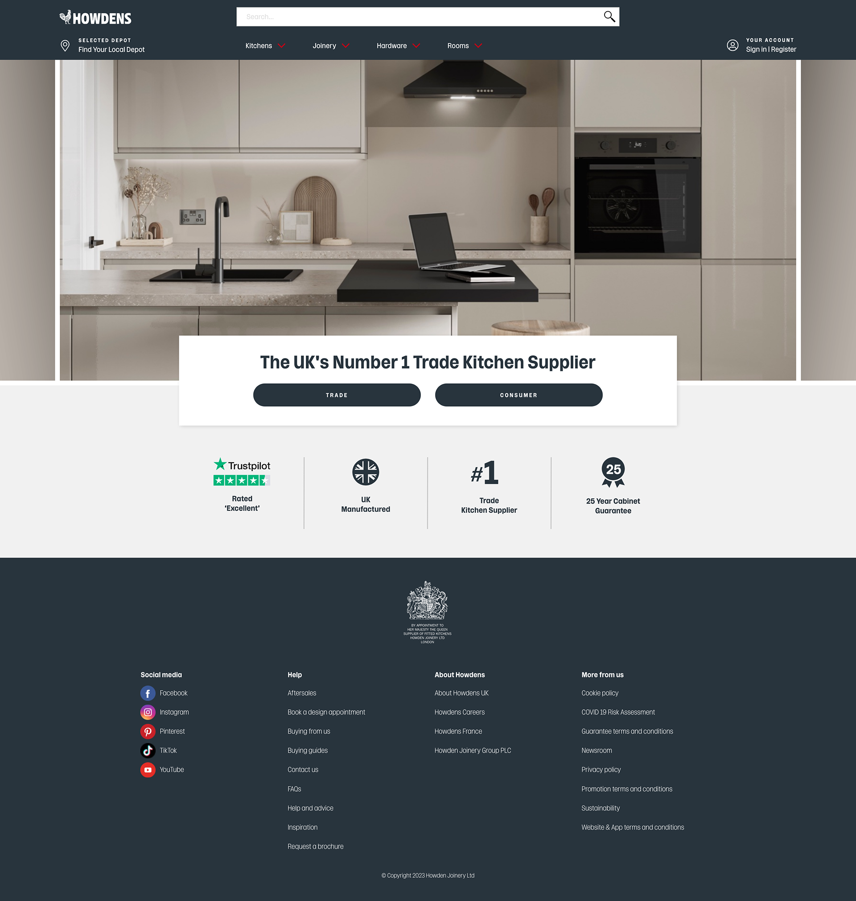
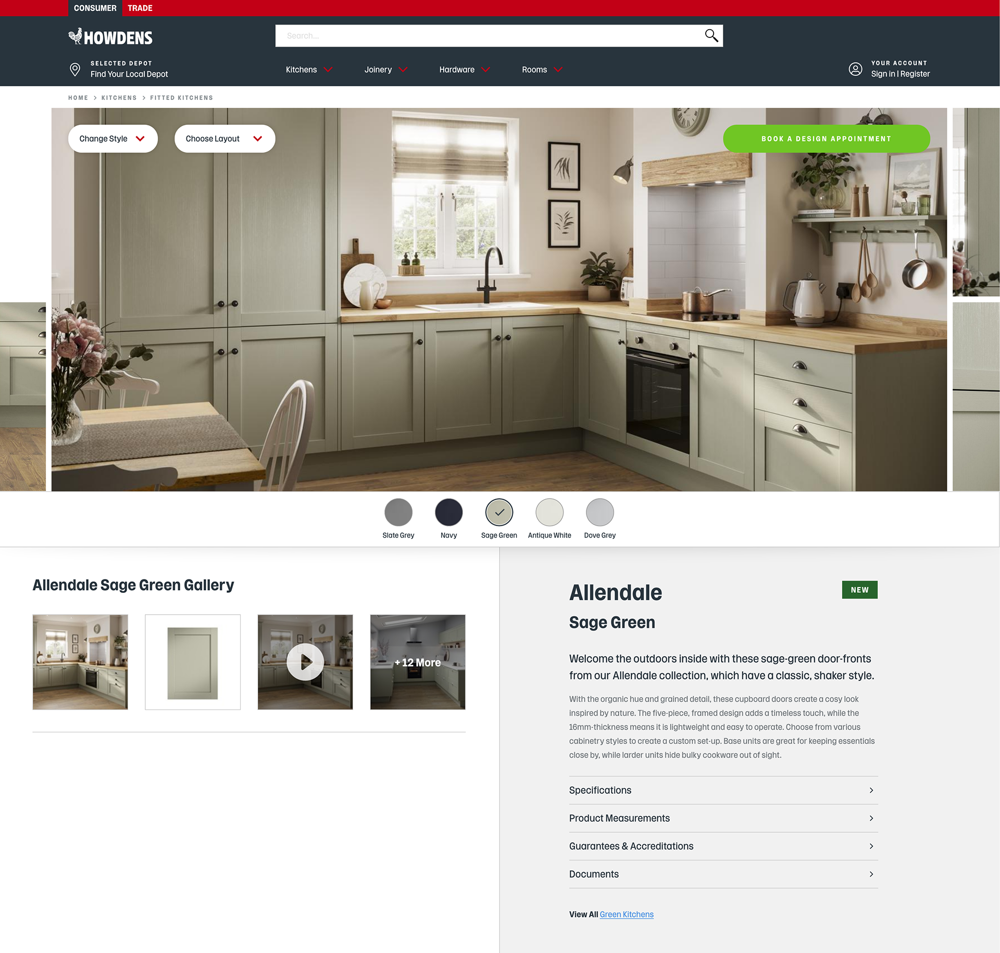
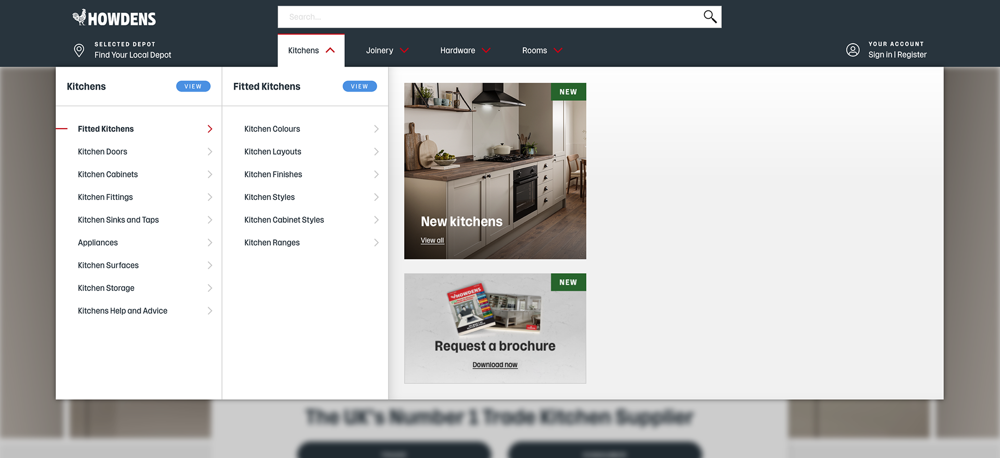
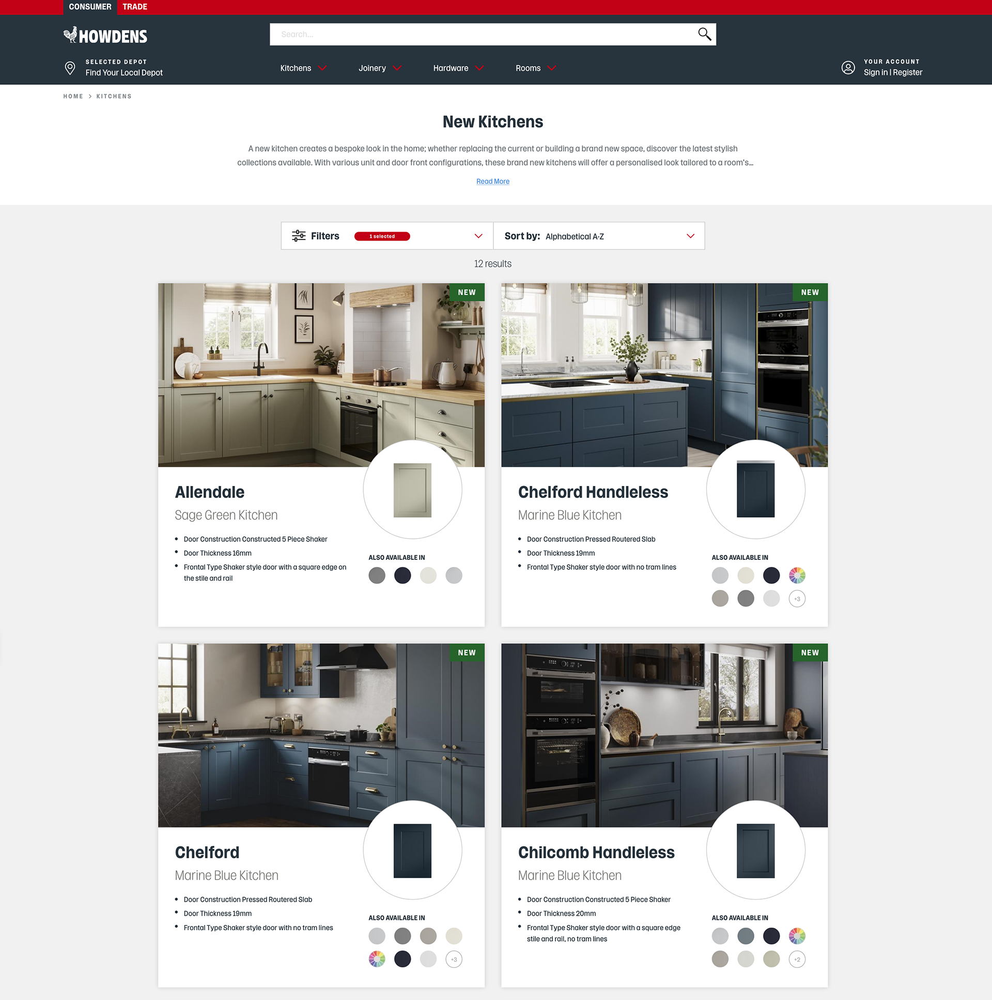
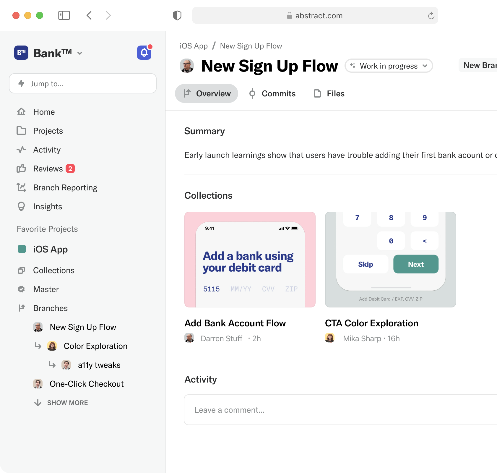
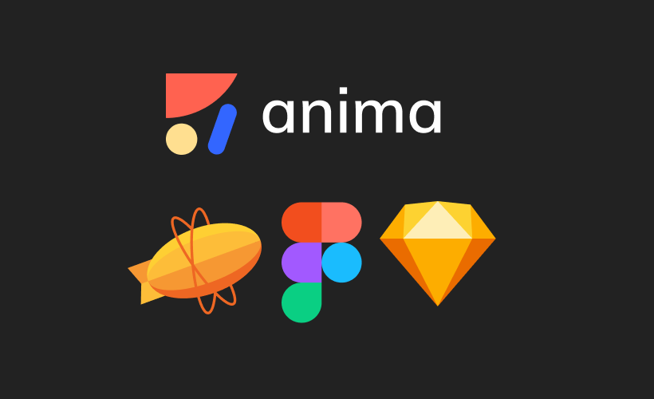

- Client:
- Howden Joinery Group Plc
- Project(s):
- Howden Joinery website and marketing campaigns. Driving brand visibility and customer engagement through a dynamic online presence and targeted promotional strategies.
- Howdens Design Systems. A comprehensive and evolving framework for maintaining design consistency and quality across all digital products.
- Role:
- User interface designer, user experience designer and graphic designer.
About the Project(s)
Enhancing the Howden Joinery Group Plc website through continuous maintenance of the Design System, leveraging user experience data, and executing strategic marketing campaigns.
About Howden Joinery Group Plc Group plc
Howden Joinery Group Plc Group plc is a leading British manufacturer and supplier of kitchens and joinery products to the building trade, headquartered in London, England. Known for its strong commitment to quality and design excellence, Howdens values attention to detail and strives to maintain high standards across its digital and physical products.
 Howden Joinery Group Plc website. Source image: Howden Joinery Group Plc.
At Howden Joinery Group Plc UK in Northampton, the focus was on maintenance and continuous improvement to boost visitor traffic on the company’s website and elevate marketing campaigns. Working to high standards, the design process utilised a complex and regularly updated design system, managed through Abstract - a versioning platform that ensured seamless collaboration and consistency.
 Howden Joinery Group Plc website. Source image: Howden Joinery Group Plc.
The design workflow incorporated industry-standard tools such as Sketch, Figma, Anima, and Zeplin, streamlining the design-to-development handoff with accuracy and efficiency. These tools were fundamental in maintaining a polished and professional online presence while consistently updating and enhancing the website to meet evolving user needs.
Howden Joinery Group Plc website. Source image: Howden Joinery Group Plc.
A Passionate and Collaborative Design Team
As part of the Howden Joinery Group Plc digital team, I collaborated with designers, marketing designers, UX designers, UX researchers, and product designers to ensure the website, apps, and trader applications remained accessible, functional, and visually appealing. Our primary focus was on user experience, leveraging research insights to drive design decisions and foster cross-team collaboration.
Design Systems at Howdens
The design systems at Howdens were an essential aspect of maintaining quality and consistency across all digital assets. Regularly updated with Abstract, it served as the backbone of our design process. Working within this system allowed me to gain valuable experience in creating, maintaining, and evolving robust design systems that adapt to changing business and user requirements.
Abstract is a powerful version control and collaboration platform specifically designed for design teams. It streamlines the process of managing design files by integrating seamlessly with tools like Sketch and Figma. Designers can create branches, make changes, and merge updates without overwriting previous versions, ensuring a transparent and organized workflow. Abstract allows teams to collaborate efficiently, review design changes, provide feedback, and maintain a complete version history—all in one place. This approach enhances consistency, reduces errors, and promotes effective collaboration across multidisciplinary teams, making it an essential tool for maintaining complex design systems.
Abstract application. Version control for Sketch. Design together, in real-time with version control for Sketch. Collaborate in the same file at the same time, without losing the original.powerful version control.
Abstract application user interface. Source image: Abstract application. Version control for Sketch.
Tools and Technologies
Our main design tool was Sketch, supported by Anima and Zeplin to ensure precise and efficient delivery to the development team. Additionally, we incorporated Figma into our workflow for its collaborative features and flexibility. These tools empowered the team to maintain high standards while delivering practical and user-centered solutions.
Image of software used at Howdens: Anima, Zepplin, Figma and Sketch.